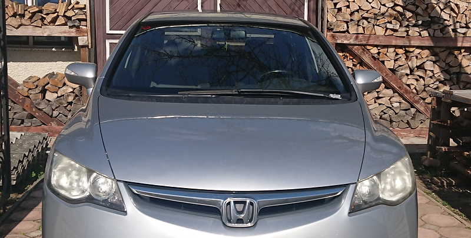

Історія з досвіду автора статті. 2017 рік - вирішили з дружиною
купувати авто. Як і в переважній більшості випадків шукали вживане авто, основні критерії
економне, в хорошому стані, автоматична коробка передач, не старіше ніж 10 -12 років,
розраховували на бюджет 7-7,5 тис. дол. США. Розглядали багато оголошень на відомих сайтах,
зустрічались з багатьма продавцями, читали купу різних відгуків. Так як це перше авто - вибирати
було дуже важко. Зупинили свій вибір на Honda Civic Hybrid, рік випуску - 2007, перша реєстрація
- 2008, ввезений в Україну з Нідерландів, пробіг 145 000 км. Сподобався салон, в загальному
доглянутий та хороший стан, на СТО підтвердили, що ‘’ходова’’ також в доброму стані. Звичайно
сумнівався щодо гібриду - кожна батарея має свій ресурс, але на СТО повідомили, що ресурс
батареї 70%, думав цього має вистачити.
Перших 6-ть місяців користування авто все було добре, потім почали вилазити деякі проблеми.
Наприклад, збільшився розхід оливи двигуна - коли виїжджав на трасу, при обертах двигуна більше
3500-4000 об/хв., або при швидкості від 130 км./год. починав падати тиск оливи в двигуні. Також
засвітився індикатор IMA (вказує на помилку в роботі батареї), на СТО її почистили, але сказали,
що за деякий час може знову засвітитися. Через пів-року, індикатор ІМА світився майже щодня - і
до того вже звик. Дальше стало цікавіше - поїхав у відрядження на 5-ть днів, машину тиждень не
заводив, коли завів, то засвітив індикатор ‘’червоний акумулятор’’, а все що червоне - то це вже
не жарти. Спробував проїхати неподалік дому, після чого заглушив авто, потім знову завів двигун
- індикатор зник. Схожі ситуації почали траплятися все частіше. Щоб індикатор не засвічувався,
потрібно було їздити щодня. За наступний рік я став частим гостем на СТО - вирішити проблему з
батареєю не змогли, часу від часу чистили помилки, трохи якось підзаряджали її, але взагальному
рекомендували продавати авто, або встановити нову батарею, вартість якої 3-4 тис. дол. США. За
два роки я вже вивчив характер своєї машини та адаптувався під нього, коли проїжджав дальні
дистанції по 1000 км., то після цього, на деякий час, заряд батареї тримав довше і машиною був
задоволений. Але потім, в періоди, коли починав проїжджати короткі дистанції, то її ресурс знову
помітно слабшав, а ІМА засвічувалась щодня.
Принцип роботи гібриду в цій
машині був наступний - батарея давала заряд на малий акумулятор, та
на інші прибори салону, якщо обороти двигуна не досягали 1500 об/хв. Після 1500 об/хв.,
акумулятор отримував заряд від роботи двигуна, а сама батарея заряжалась в процесі руху
автомобіля, при плавному та стабільному гальмуванні. Але, з кожним разом заряду батареї
вистачало на менше часу. Єдиний вихід - потрібно більше їздити, при цьому на підвищених обертах,
або щодня по 5 хвилин прогрівати двигун на оборотах понад 2000 об/хв., що в свою чергу впливає
на витрати пального (коли купували авто витрати складали 6,5-7,5 л/100 км., через рік доходили
до 9-10, при тому, що об’єм двигуна 1,34).
Можна йти на ризик та вибрати
вживаний гібрид, можливо мій досвід не варто прирівнювати до всіх
ситуацій. Але я однозначно не рекомендував б купувати б/у гібрид, якщо хіба не хочете пережити
схожу ситуацію. А якщо вже робити вибір на користь гібридного авто, то лише на нове, коли маєш
гарантію від виробника, та впевненість в ресурсі батареї.

Опубліковано 4-06-2021